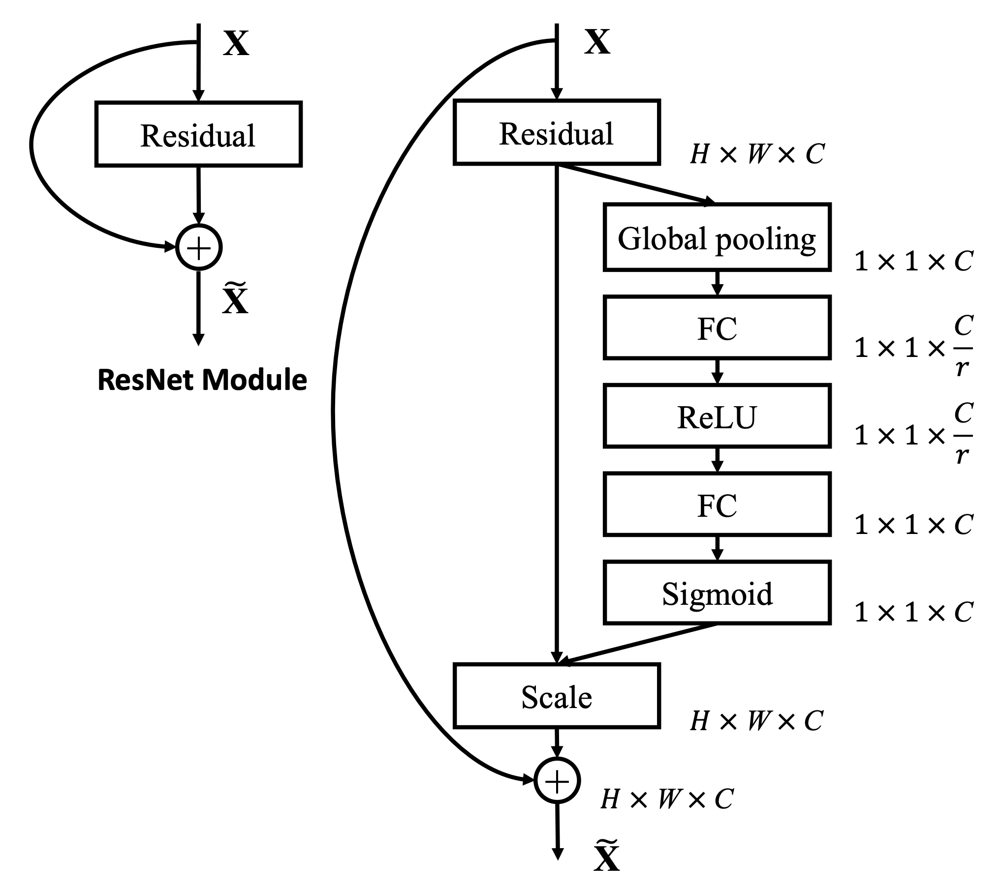

ResNet：深层网络的突破#
Inception：多尺度感受野的探索中我们学习了 Inception 架构——通过多分支并行，让网络同时拥有多个大小的感受野，解决了"感受野应该多大"的问题。GoogLeNet 用 22 层网络赢得了 ImageNet 2014 的冠军，证明了精巧的结构设计比暴力堆参数更有效。
但一个更深层的问题随之而来：如果我们把网络堆得更深，比如 50 层、100 层，性能会不会更好？
毕竟，感受野中讨论过：层数越多，感受野越大，每个神经元能捕获的上下文信息越丰富。理论上，100 层的网络应该比 22 层有更强的表达能力。
但现实还是很骨感的。当研究者尝试训练超过 20 层的网络时，遇到了一个诡异的现象——退化问题（Degradation Problem）：
网络深度 |
训练集准确率 |
测试集准确率 |
|---|---|---|
20层 |
85% |
82% |
56层 |
75% |
70% |
更深反而更差！ 而且这不是过拟合——注意训练集准确率也在下降。过拟合的特征是训练好但测试差，而这里训练本身就已经崩了。这种现象被称为退化问题：随着网络深度增加，准确率饱和后迅速下降，且无法通过更多训练迭代解决。
直到 2015 年，ResNet [HZRS16] 的出现才解决了这个难题，它用 152 层网络赢得了 ImageNet 竞赛，证明了"深"确实可以"更好"。更惊人的是，他们在 CIFAR-10 上成功训练了 1000 层的网络——这在之前是完全不可想象的。
深层网络的困境#
回顾 梯度消失（Vanishing Gradient） 中讨论的问题：梯度是各层影响的乘积。在深层网络中，这个乘积链太长了。
假设每层梯度都是 0.9（已经不错了），100层连乘后：
这意味着靠近输入层的参数几乎收不到梯度信号——前面几十层"冻住"了，只有后面几层在更新。
Sigmoid 函数 中提到 Sigmoid 会加剧这个问题，但即使换成 ReLU，单纯堆叠层数仍然会遇到优化困难。问题的本质是：网络需要学习一个复杂的映射函数，但梯度传播的路径太长太曲折。
方法一：几何视角——建立"抄近路"通道#
想象一个传话游戏：100 个人排成一列，第一个人说一句话，传到最后一个人时，信息已经严重失真了。深层网络就像这个游戏——输入信号经过几十层变换后，梯度信号"传"不回前面的层。
ResNet的核心洞察很简单：如果某一层学不到有用的东西，不如让它"抄近路"，把输入原封不动地传过去。
{kind=link}

左图（ResNet 基础模块）：输入 \(\mathbf{x}\) 通过残差路径后与恒等映射相加得到输出 \(\tilde{\mathbf{x}}\)。曲线箭头即为跳跃连接，让梯度可以直接回传。这是本节的核心结构。#
右图（SE-ResNet 模块）：在残差连接基础上增加了 Squeeze-and-Excitation 分支，用于学习通道注意力——自动判断"哪些特征通道更重要"。这是通道注意力：SE-Net的内容，展示了 ResNet 架构的扩展性。图片来自 SE-Net 论文 [HSS18]。
关键区别：
普通网络：梯度必须一层一层地"传"，每传一层就衰减一点
残差网络：梯度可以通过"捷径"直接回传到前面的层，绕过了中间的衰减
这就像爬山：普通网络只能沿着山路蜿蜒而上，残差网络则允许你直接坐缆车从山顶滑到山脚。
方法二：信息论视角——只学"差异"#
从互信息的角度看，深层网络面临一个信息瓶颈问题：数据每经过一层，都可能丢失一些原始输入的信息。100 层之后，网络可能已经"忘记"了输入到底是什么。
ResNet 的解决方案很巧妙：与其让网络学完整的映射 \(H(x)\)，不如让它学"需要改什么"——即残差 \(F(x) = H(x) - x\)。
用生活场景类比：
普通网络：老师让你"画一只猫"，你只能凭空想象猫长什么样
残差网络：老师给你一张狗的图片，让你"改成一只猫"——你只需要画"猫和狗的不同之处"（耳朵、尾巴、胡须）
显然，后者的任务更简单。同样，让网络学 \(F(x)\)（残差）比学 \(H(x)\)（完整映射）更容易——如果输入和输出已经很接近，\(F(x) \approx 0\) 即可。
恒等映射：两种视角的数学统一#
现在我们用数学语言统一上述两种视角。
恒等映射（Identity Mapping）指的是：输入 \(x\) 原封不动地作为输出。数学上就是 \(f(x) = x\)。
普通网络的层学习目标：
ResNet的层学习目标：
其中 \(F(x)\) 是残差函数，\(x\) 通过跳跃连接（Skip Connection）直接加到输出上。
核心优势：
梯度传播：反向传播时，梯度可以通过恒等映射的x分支直接回传，不受 \(F(x)\) 的影响
优化容易：如果某一层不需要做任何变换，让 \(F(x)=0\) 即可恢复恒等映射，网络总能"退回到"较简单的状态
梯度流动的数学原理#
为什么跳跃连接能解决梯度消失？回顾 反向传播算法 中的分析：深层网络的梯度等于多层 定义：Jacobian 矩阵 的连乘，当每层 Jacobian 的奇异值 \(< 1\) 时，梯度会指数级衰减（详见 多层网络的 Jacobian 连乘与梯度消失）。
ResNet 的核心突破在于为梯度提供了第二条路径：
ResNet 的梯度传播
残差块：\(h_{i+1} = h_i + F(h_i, W_i)\)
反向传播时：
关键洞察：梯度分成两条路径
跳跃路径：\(\frac{\partial \mathcal{L}}{\partial h_{i+1}} \cdot 1 = \frac{\partial \mathcal{L}}{\partial h_{i+1}}\)（直接回传，不衰减！）
残差路径：\(\frac{\partial \mathcal{L}}{\partial h_{i+1}} \cdot \frac{\partial F}{\partial h_i}\)（可能衰减，但不影响主路径）
对于 \(n\) 个残差块的堆叠：
展开前几项：
其中 \(a_k = \frac{\partial F_k}{\partial h_k}\)。
保底机制：即使所有 \(a_k \approx 0\)（残差分支没学到东西），梯度依然可以通过：
这就是 \(+1\) 的魔力——梯度至少为 1，不会衰减到零。
数值验证
假设残差函数的梯度 \(\frac{\partial F}{\partial h} \sim \mathcal{N}(0, 0.01)\)（均值为0，方差0.01）：
网络深度 |
普通网络梯度 |
ResNet 梯度 |
改善倍数 |
|---|---|---|---|
10 层 |
\(0.9^{10} \approx 0.35\) |
\(\approx 0.95\) |
2.7× |
50 层 |
\(0.9^{50} \approx 0.005\) |
\(\approx 0.78\) |
156× |
100 层 |
\(0.9^{100} \approx 2.6 \times 10^{-5}\) |
\(\approx 0.61\) |
23,000× |
梯度不再消失，深层网络终于可以训练了！
历史背景：ImageNet 2015的突破#
ResNet由微软亚洲研究院的 Kaiming He 等人于2015年提出[HZRS16]，是深度学习发展史上的里程碑：
模型 |
年份 |
层数 |
ImageNet Top-5错误率 |
|---|---|---|---|
VGG-19 |
2014 |
19 |
7.3% |
GoogLeNet |
2014 |
22 |
6.7% |
ResNet-152 |
2015 |
152 |
3.57% |
ResNet-152的 3.57% 是模型ensemble的结果，单模型约为 4.5%。但即便如此，这也是前所未有的突破。更重要的是，ResNet 不仅在 ImageNet 分类任务夺冠，还在检测、定位、分割等任务中横扫所有对手——证明了残差架构的普适价值。
152层——这是此前认为"不可能训练"的深度。ResNet 不仅证明了深层网络可以训练，还证明了"深"是提升性能的关键。
更惊人的是，ResNet 的设计极其简洁：
没有复杂的并行结构（不像 GoogLeNet 的 Inception 模块）
没有精心设计的超参数（VGG 需要反复实验确定深度）
只是简单地加上了跳跃连接，就解决了困扰学界多年的难题
这再次印证了计算图、反向传播与梯度下降：深度学习核心数学基础中的核心思想：好的设计往往源于对问题本质的深刻洞察，而非复杂的技术堆砌。
ResNet架构详解#
基础构建块：残差块#
ResNet由多个残差块（Residual Block）堆叠而成。每个残差块包含两条路径：
Bottleneck设计：对于更深的网络（ResNet-50+），使用 1×1 卷积先降维、再 3×3 卷积、再 1×1 升维的三层结构：
层 |
卷积核 |
输入通道 |
输出通道 |
作用 |
|---|---|---|---|---|
1×1 |
256 |
64 |
降维，减少计算 |
|
3×3 |
3×3 |
64 |
64 |
特征提取（低维） |
1×1 |
1×1 |
64 |
256 |
升维，恢复维度 |
这种"先压缩再处理再扩张"的思路，将计算量减少了约 50%，同时保持表达能力。
维度匹配问题#
当输入输出维度不一致时（比如通道数从 64 变为 128），简单的 \(x+y\) 无法计算。解决方案：
投影 shortcut：用 1×1 卷积调整 \(x\) 的维度（带额外参数）
填充 shortcut：用零填充增加通道（无额外参数）
实践中，投影 shortcut 效果更好，因为它允许网络学习如何调整维度。
PyTorch实现#
基础残差块#
import torch
import torch.nn as nn
import torch.nn.functional as F
class BasicBlock(nn.Module):
"""ResNet基础残差块（用于ResNet-18/34）"""
expansion = 1
def __init__(self, in_channels, out_channels, stride=1, downsample=None):
super(BasicBlock, self).__init__()
# 第一个卷积层，可能下采样（stride=2）
self.conv1 = nn.Conv2d(in_channels, out_channels, kernel_size=3,
stride=stride, padding=1, bias=False)
self.bn1 = nn.BatchNorm2d(out_channels)
# 第二个卷积层，保持尺寸
self.conv2 = nn.Conv2d(out_channels, out_channels, kernel_size=3,
stride=1, padding=1, bias=False)
self.bn2 = nn.BatchNorm2d(out_channels)
# 维度不匹配时的调整（投影shortcut）
self.downsample = downsample
def forward(self, x):
# 保存输入用于跳跃连接
identity = x
# 主路径：卷积→BN→ReLU→卷积→BN
out = self.conv1(x)
out = self.bn1(out)
out = F.relu(out)
out = self.conv2(out)
out = self.bn2(out)
# 维度匹配处理
if self.downsample is not None:
identity = self.downsample(x)
# 残差连接：F(x) + x
out += identity
out = F.relu(out)
return out
Bottleneck块（用于ResNet-50+）#
class Bottleneck(nn.Module):
"""Bottleneck残差块（用于ResNet-50/101/152）"""
expansion = 4 # 输出通道是输入的4倍
def __init__(self, in_channels, out_channels, stride=1, downsample=None):
super(Bottleneck, self).__init__()
# 1×1降维：in_channels → out_channels
self.conv1 = nn.Conv2d(in_channels, out_channels, kernel_size=1, bias=False)
self.bn1 = nn.BatchNorm2d(out_channels)
# 3×3卷积：空间特征提取
self.conv2 = nn.Conv2d(out_channels, out_channels, kernel_size=3,
stride=stride, padding=1, bias=False)
self.bn2 = nn.BatchNorm2d(out_channels)
# 1×1升维：out_channels → out_channels×4
self.conv3 = nn.Conv2d(out_channels, out_channels * self.expansion,
kernel_size=1, bias=False)
self.bn3 = nn.BatchNorm2d(out_channels * self.expansion)
self.downsample = downsample
def forward(self, x):
identity = x
# 1×1降维
out = self.conv1(x)
out = self.bn1(out)
out = F.relu(out)
# 3×3卷积
out = self.conv2(out)
out = self.bn2(out)
out = F.relu(out)
# 1×1升维（无激活，在残差连接后再激活）
out = self.conv3(out)
out = self.bn3(out)
# 维度匹配
if self.downsample is not None:
identity = self.downsample(x)
# 残差连接
out += identity
out = F.relu(out)
return out
完整ResNet架构#
class ResNet(nn.Module):
"""ResNet完整实现"""
def __init__(self, block, layers, num_classes=1000):
"""
Args:
block: BasicBlock或Bottleneck
layers: 每个阶段的残差块数量，如[3,4,6,3]对应ResNet-50
num_classes: 分类类别数
"""
super(ResNet, self).__init__()
self.in_channels = 64
# 初始卷积：7×7，stride=2，下采样4倍
self.conv1 = nn.Conv2d(3, 64, kernel_size=7, stride=2, padding=3, bias=False)
self.bn1 = nn.BatchNorm2d(64)
self.maxpool = nn.MaxPool2d(kernel_size=3, stride=2, padding=1)
# 四个阶段，每个阶段包含多个残差块
self.layer1 = self._make_layer(block, 64, layers[0]) # 输出：56×56
self.layer2 = self._make_layer(block, 128, layers[1], stride=2) # 28×28
self.layer3 = self._make_layer(block, 256, layers[2], stride=2) # 14×14
self.layer4 = self._make_layer(block, 512, layers[3], stride=2) # 7×7
# 全局平均池化 + 全连接
self.avgpool = nn.AdaptiveAvgPool2d((1, 1))
self.fc = nn.Linear(512 * block.expansion, num_classes)
# 权重初始化（He初始化，适合ReLU）
self._initialize_weights()
def _make_layer(self, block, out_channels, num_blocks, stride=1):
"""构建一个阶段的残差块"""
# 第一个块可能需要下采样
downsample = None
if stride != 1 or self.in_channels != out_channels * block.expansion:
downsample = nn.Sequential(
nn.Conv2d(self.in_channels, out_channels * block.expansion,
kernel_size=1, stride=stride, bias=False),
nn.BatchNorm2d(out_channels * block.expansion),
)
layers = []
layers.append(block(self.in_channels, out_channels, stride, downsample))
# 后续块保持尺寸
self.in_channels = out_channels * block.expansion
for _ in range(1, num_blocks):
layers.append(block(self.in_channels, out_channels))
return nn.Sequential(*layers)
def _initialize_weights(self):
"""He初始化"""
for m in self.modules():
if isinstance(m, nn.Conv2d):
nn.init.kaiming_normal_(m.weight, mode='fan_out', nonlinearity='relu')
elif isinstance(m, nn.BatchNorm2d):
nn.init.constant_(m.weight, 1)
nn.init.constant_(m.bias, 0)
def forward(self, x):
# 初始卷积：224×224 → 112×112 → 56×56
x = self.conv1(x)
x = self.bn1(x)
x = F.relu(x)
x = self.maxpool(x)
# 四个残差阶段
x = self.layer1(x) # 56×56
x = self.layer2(x) # 28×28
x = self.layer3(x) # 14×14
x = self.layer4(x) # 7×7
# 分类头
x = self.avgpool(x) # 7×7 → 1×1
x = torch.flatten(x, 1)
x = self.fc(x)
return x
def resnet18(num_classes=1000):
"""ResNet-18: [2,2,2,2] = 8个残差块 + 初始层 = 18层（含全连接）"""
return ResNet(BasicBlock, [2, 2, 2, 2], num_classes)
def resnet50(num_classes=1000):
"""ResNet-50: [3,4,6,3] = 16个Bottleneck = 48层 + 初始层 = 50层"""
return ResNet(Bottleneck, [3, 4, 6, 3], num_classes)
效果验证：残差连接的威力#
ResNet 论文中的关键对比实验：
网络 |
层数 |
Top-1错误率 |
训练情况 |
|---|---|---|---|
Plain-34 |
34 |
28.54% |
困难 |
ResNet-34 |
34 |
25.03% |
正常 |
Plain-50 |
50 |
训练失败 |
无法收敛 |
ResNet-50 |
50 |
23.85% |
正常 |
ResNet-152 |
152 |
21.3% |
正常 |
关键发现：
34 层普通网络（Plain）比 18 层更差（退化问题）
34 层 ResNet 不仅解决了退化，还比 18 层更好
50+ 层的普通网络完全无法训练，但 ResNet 可以训练到 152 层甚至 1000+ 层
CIFAR-10 上的极限测试#
论文作者在 CIFAR-10 上进行了更激进的实验——训练超过100层的网络：
网络深度 |
普通网络 |
ResNet |
|---|---|---|
20层 |
训练成功 |
训练成功 |
56层 |
退化（训练失败） |
训练成功 |
110层 |
完全无法收敛 |
训练成功 |
1202层 |
— |
训练成功 |
1202 层——这个数字本身就令人震惊。它不仅证明了残差连接可以训练极深网络，还表明深度本身不是障碍，如何训练才是关键。
与LeNet的对比#
特性 |
LeNet-5 (1998) |
ResNet-50 (2015) |
演进逻辑 |
|---|---|---|---|
深度 |
8 层 |
50 层 |
深度增加了 6 倍 |
核心问题 |
如何设计 CNN |
如何训练深层网络 |
问题域的扩展 |
关键组件 |
卷积 + 池化 |
残差连接 |
解决新问题的创新 |
归一化 |
无 |
BatchNorm |
稳定训练的关键 |
激活函数 |
Tanh |
ReLU |
更强的梯度信号 |
参数量 |
60K |
25M |
规模增大了 400 倍 |
应用场景 |
手写数字 |
通用图像分类 |
从特定到通用 |
演进脉络：
LeNet 证明了 CNN 的可行性（“能做”）
AlexNet 证明了深度的重要性（“要深”）
ResNet 解决了训练难题（“能深”）
总结#
ResNet 通过残差连接解决了深层网络的训练难题，其核心思想可以概括为：
视角 |
核心洞察 |
实现方式 |
|---|---|---|
几何 |
建立梯度高速公路 |
跳跃连接绕过衰减层 |
信息论 |
只学差异，保留原始信息 |
\(F(x)\) 代替 \(H(x)\) |
优化 |
恒等映射作为保底方案 |
学不好就退化成x |
为什么ResNet重要：
它是现代深度学习的基石，几乎所有后续架构（DenseNet、EfficientNet、Transformer）都借鉴了残差思想
它证明了网络深度是性能的关键因素，开启了"越深越好"的时代
它的设计极其简洁优雅，是工程与理论完美结合的典范
从LeNet-5架构详解到 ResNet，神经网络架构的演进展示了深度学习的核心规律：理论洞察指导架构设计，架构创新突破性能瓶颈。下一节神经网络训练基础我们将学习如何训练这些复杂的深层网络。
参考文献#
Kaiming He, Xiangyu Zhang, Shaoqing Ren, and Jian Sun. Deep residual learning for image recognition. In Proceedings of the IEEE conference on computer vision and pattern recognition, 770–778. 2016.
Jie Hu, Li Shen, and Gang Sun. Squeeze-and-excitation networks. In Proceedings of the IEEE Conference on Computer Vision and Pattern Recognition (CVPR), 7132–7141. 2018.
贡献者与修订历史
查看详细修订记录
-
f159d562026-05-08 - Heyan Zhu: fix: address complaints from the linter -
15d1b152026-05-03 - Heyan Zhu: docs(model-architecture-design): add new chapter on CNN architecture design methodology -
42a2ebc2026-05-02 - Heyan Zhu: feat(docs): add inception and resnet modules with related content